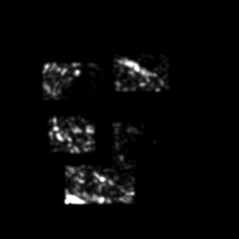
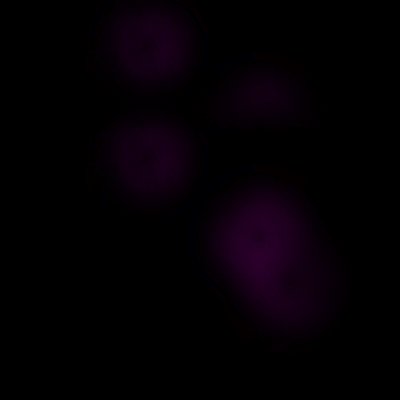
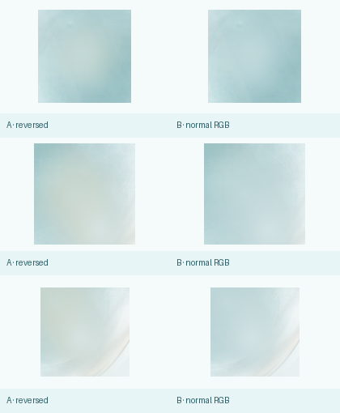
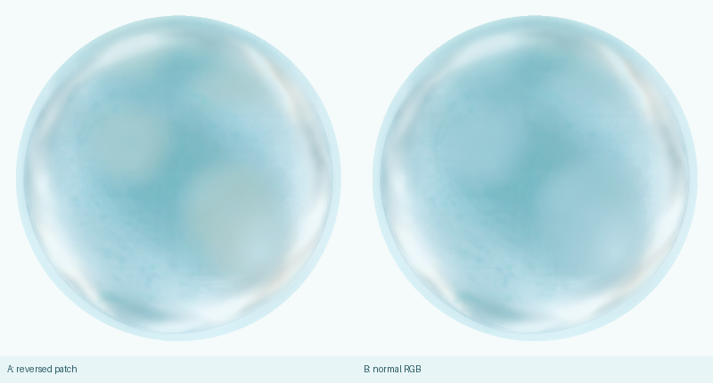
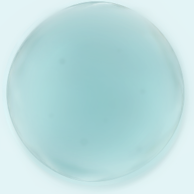

M1.2 DONOR MATERIAL REVIEW
FINAL ART 离线 donor baking · verification only · 不改 production · 不进入 M2
REFERENCE
FINAL_ART_025 是 offline derivation donor + primary material reference；FINAL_ART_050 只提供 depth / thickness / cloudy organization guide；FROZEN_K2 只保留 endpoint authority；D K0 只提供 neutral restraint。所有 reference 均不作为 runtime direct sample。


DONOR SOURCE OUTPUTS

局部 patch 重组后的 cloudy mass、局部厚薄和水体重量。

analytic body thickness + 025/050 low-frequency local mass；RGB = shallow / medium / deep。

从 025 band-pass vocabulary 筛选出的少量、断裂、低对比细节。
REVIEW-ONLY DEBUG



CORRECTNESS REPAIR
本轮只修 shell fidelity、core reconstruction channel correctness 和 alpha 可观测性；内部 donor material representation、thickness design、detail vocabulary 与 neutral pose 未重做。



FORMAL SHELL FIDELITY = PASS
CORE RECONSTRUCTION COLOR = PASS · B NORMAL RGB
CORE RESIDUE = NONE
SPARSE DETAIL REVIEWABILITY = PASS
CORE RECONSTRUCTION COLOR = PASS · B NORMAL RGB
CORE RESIDUE = NONE
SPARSE DETAIL REVIEWABILITY = PASS
RESULT
CURRENT DONOR HERO · STATIC
OLD FAILED HERO VS NEW DONOR HERO
